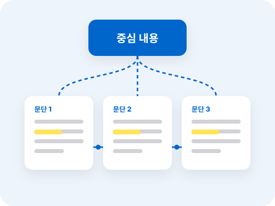
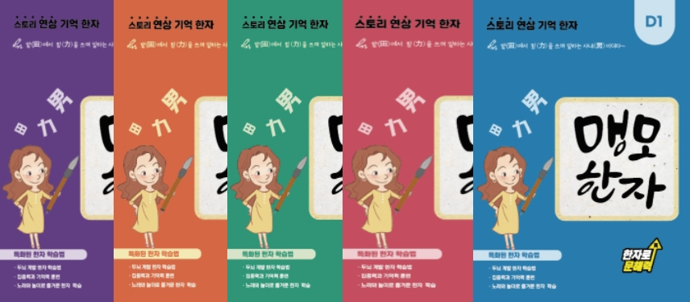
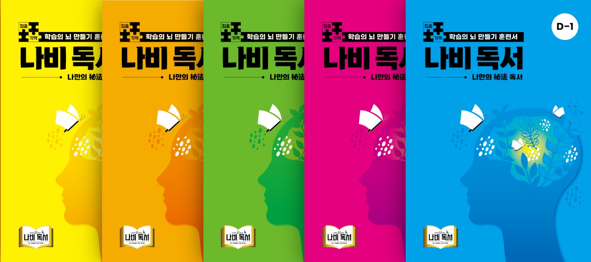

STEP 3
초등 고학년
핵심과 구조를 읽는 단계
수업 시스템
아이의 성장에 따라
아이의 성장에 따라
읽기 교육도 달라져야 합니다.
나비독서는 아이의 학년과 읽기 수준에 맞춰 4단계로 수업합니다.
STEP 3 · 이 단계의 목표
글의 핵심과 내용 사이의 관계를 파악하고
글의 핵심과 내용 사이의 관계를 파악하고
추론 · 판단하는 능력으로 발전시킵니다.
이 단계에서 길러지는 힘
- 긴 글에서 중심 내용을 찾는 힘
- 문단의 관계를 연결해 구조를 보는 힘
- 근거를 따져 추론하고 판단하는 힘

PROGRAM
초등 고학년
초등 고학년
핵심 프로그램
중급 한자 어휘력
개념어 · 추상어의 뜻을 한자로 이해합니다.
MDR
정확하게 읽고 기억하는 깊이 읽기 훈련
SDR
핵심과 구조를 파악하는 전략적 읽기 훈련
핵심어 · 중심내용
문단마다 핵심어와 중심 내용을 찾습니다.
문단 관계
문단과 문단이 어떻게 이어지는지 파악합니다.
글의 구조화
글 전체의 짜임을 한눈에 정리합니다.
추론
글 속 정보를 연결해 숨은 의미를 찾습니다.
판단
주장과 근거를 따져 타당성을 판단합니다.
논리적 사고력 향상
스스로 생각을 정리하고 논리적으로 표현합니다.
TEXTBOOK
수업 교재
뇌과학 맹모한자 + 나비독서 + 현대소설 + 철학과 논리 + 역사와 사회


함께 사용하는 교재
- 문학현대소설
- 사고력철학과 논리
- 교과 배경지식역사와 사회
RECOMMEND